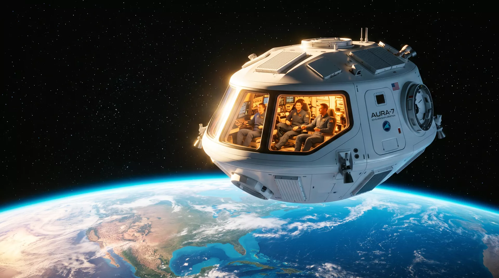

Eleven minutes above the world.
At dawn, on a quiet desert runway, seven people trade the ground for the sky. The engine lights, the Earth lets go, and for a short while — the rarest while there is — you are somewhere almost no one has ever been. Then it gives you back.
That last one is correct. Everyone's is. You trained three days for this morning, and the vehicle trained for eleven years. Harness tight. Visor down. The desert is pink at the edges and utterly still.
The runway falls away like something you dreamed.
Full thrust in 3.2 seconds. The push is steady, not violent — a large hand, patient and absolutely certain. Below you, the hangars shrink into geometry.
The thickest air the vehicle will ever meet.
Maximum dynamic pressure. The airframe shoulders through it; the hull hums one low note. Three-point-six g. You weigh more than you ever have — and you have never felt lighter.
The roar stops mid-syllable.
Main engine cut-off. What's left is the sound of your own breathing — and forty-eight kilometres of falling upward, engine off, momentum spending itself against the last of the sky.
By every definition written on Earth, you have now left it. The sky you grew up under is below you, a thin blue lens on the edge of everything.

Unbuckle.
Three minutes without weight. The cabin becomes a small, bright room with no floor. Nothing here is holding anything down — including these words.
The horizon curves. Not a diagram — the actual edge of the actual world, bending away in blue.
Long enough to somersault. Long enough, after that, to go completely quiet.
0.00 g. Seven humans, one shared window, nobody saying anything useful. Correct behaviour.
Sixteen sunrises a day happen up here. You get one. It's enough.
The atmosphere takes you back the way it let you go.
Gradually, then firmly. The window glows faintly amber at the edges as the capsule trades speed for heat, exactly as designed. Four-point-two g, brief and honest. The sky is finding its colour again.
Two hard tugs, then a long, slow forgiveness.
Drogues first, to steady. Mains at three kilometres — the deceleration eases into a sway, and the desert reassembles itself below you: runway, hangars, the small crowd that has not moved since ignition.
Nothing about the ground has changed.
Eleven minutes and four seconds after ignition, the legs settle on the same desert floor, in the same dawn light. Nothing about the ground has changed. Everything about the way you will look at it has.
Three days of training. One morning of flight.
A different rest of your life. Every ZENITH crew trains together at the spaceport before flying together. No simulators skipped, no questions too small.
Fit & physiology
Suit fitting, medical baseline, and an honest conversation about what 4 g feels like — in a centrifuge, not a brochure.
Cabin drills
Your seat, your harness, your window. Egress practice until it bores you. Boredom, here, is the goal.
Full dress rehearsal
The complete flight profile in the integrated simulator, twice. The second run is for the part of you that didn't believe the first.
We won't call it affordable, and we won't dress it up. It is what flying seven people past the Kármán line safely costs, flown by a crew that would rather be honest than popular. Deposits are refundable until vehicle assignment.